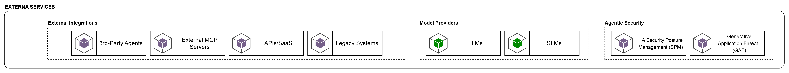

La capa de External Services representa los servicios, proveedores y sistemas que están fuera del límite de control principal de la organización o de la propia plataforma agéntica, pero que resultan necesarios para operar el ecosistema. Su papel en el blueprint es mostrar que la plataforma no vive aislada: depende de modelos externos, herramientas de terceros, servicios SaaS, sistemas legacy y servicios especializados de seguridad agéntica que no pertenecen a los dominios internos ni a las capacidades compartidas corporativas. Esta distinción es importante porque refuerza el principio de desacoplamiento: los agentes no deben integrarse directamente con estas dependencias de forma ad hoc, sino a través de las capacidades de plataforma y gobierno definidas en el blueprint. La referencia ya trataba LLMs, servicios MCP, conocimiento y otros sistemas empresariales como Software Systems externos que el agente consume, no como componentes internos del runtime.

Esta capa agrupa proveedores, plataformas y sistemas externos que la plataforma agéntica necesita consumir o integrar, como model providers, servicios SaaS, sistemas legacy, external MCP servers y controles especializados de seguridad agéntica. Su propósito es hacer explícito que estos elementos no forman parte del núcleo interno de la plataforma y que su consumo debe estar mediado por las capacidades de acceso, gobierno y seguridad definidas en el blueprint.
3rd-Party Agents
Estos componentes permiten la federación o integración con agentes operados por terceros. Son relevantes cuando la plataforma requiere orquestar o invocar capacidades externas que ya encapsulan lógica especializada.
External MCP Servers
Corresponden a capacidades expuestas mediante MCP fuera del perímetro de la organización. Su presencia es coherente con una arquitectura extensible basada en contratos de tools desacoplados del runtime central.
APIs / SaaS
Este grupo agrupa servicios de terceros y capacidades SaaS consumidas por la plataforma o por los agentes. Su inclusión reconoce que una plataforma empresarial debe integrarse con ecosistemas externos sin asumir control directo sobre su ciclo de vida.
Legacy Systems
Los sistemas heredados representan una condición estructural del entorno empresarial. Su presencia en la arquitectura es esencial, ya que muchos casos de uso dependen de información y procesos que continúan residiendo en plataformas preexistentes.
Model Providers
La capa de Model Providers abstrae los modelos consumidos por la plataforma. En el diagrama se contemplan LLMs y SLMs, Esto se define para poder soportar estrategias diferenciadas de costo, latencia, soberanía y criticidad de uso.
Desde el punto de vista arquitectónico, estos modelos deben ser consumidos de forma gobernada a través del LLM Gateway. En caso de incorporar modelos alojados internamente u on-premise, se recomienda complementar esta capa con una capacidad explícita de Model Serving Platform o Inference Platform dentro de Platform Engineering, manteniendo el gateway como punto unificado de acceso.
Agentic Security
agrupa los controles especializados de seguridad para sistemas agénticos y consumo de IA generativa. Su propósito es complementar la seguridad corporativa base con mecanismos específicos para proteger el uso de modelos, tools, retrieval y salidas del agente, incluyendo autorización sobre agentes y herramientas, protección frente a prompt injection, control de acceso al conocimiento recuperado, prevención de fuga de datos, guardrails de comportamiento y detección o redacción de información sensible. En conjunto, esta capa busca que la plataforma agéntica opere bajo principios de cumplimiento, trazabilidad y uso seguro de capacidades cognitivas, reduciendo riesgos propios de la interacción con LLMs y agentes autónomos.